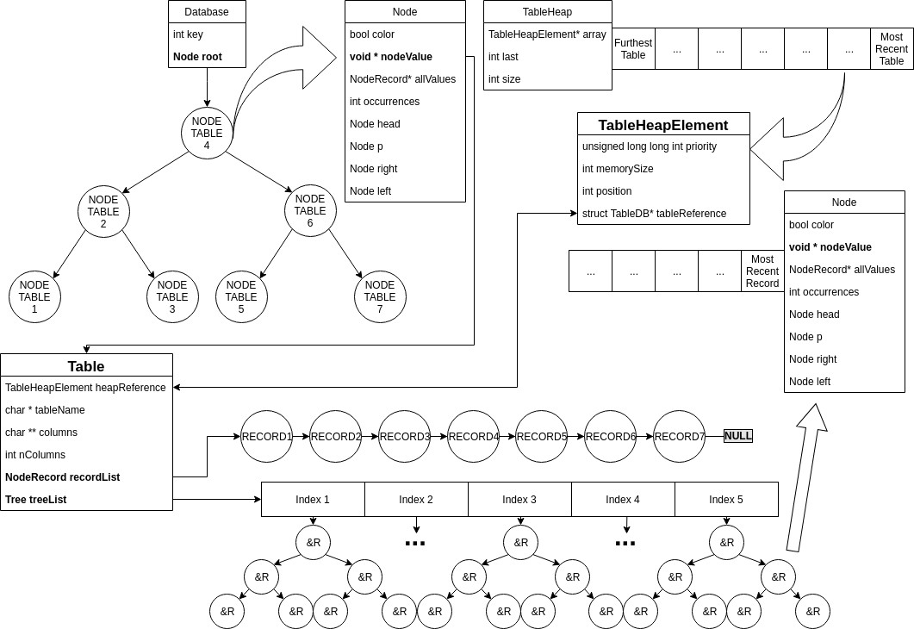

Consegna: 5 Settembre 2018
| Studente | Matricola |
|---|---|
| Samuele Ceroni | 0000825238 |
| Giacomo Aloisi | 0000832933 |
| Ugo Baroncini | 0000842092 |
Per lo sviluppo abbiamo usato:
Sublime Text 3gccMac OS X e Linux DebianA sviluppo completato abbiamo fatto il porting del progetto su Visual Studio 2015 su Windows 10 per ulteriori test.
Il lavoro di gruppo è stato gestito con un repository git condiviso tramite GitHub.
In questo file sono racchiuse tutte le specifiche sul funzionamento del database, sui suoi costi in termini di velocità e di memoria. Il progetto è diviso in: gestione della memoria, strutture dati, corpo centrale e parser. Ogni parte verrà analizzata nel dettaglio e nella sezione finale verranni discussi i costi computazionali di tempo e spazio. È stato pensato di inserire nel file header del progetto solo le funzioni esterne, ovvero quelle che servono alle diverse parti del progetto per dialogare tra loro, mentre le funzioni secondarie, quelle interne, sono dichiarate nelle prime righe del file sorgente. È stato pernsato di fare come quando si lavora con diversi file, per rendere le funzioni "private" o "pubbliche", per nostra chiarezza mentale e di contenuti.
Un reale database, di quelli che possiamo trovare in sistemi enterprise e di produzione, possono immagazzinare una grande quantità di dati. In fase di progettazione abbiamo deciso di emulare, per quanto possibile, le capacità di questi sistemi, cercando il miglior compromesso tra complessità di implementazione e prestazioni con dataset corposi.
Limitare l’utilizzo di RAM per mantenere alte le prestazioni di tutto il sistema, senza rallentare le query.
Supponendo un utilizzo con dataset grandi, un sistema di caching ben realizzato può fornire speed-up importanti, limitando i caricamenti da disco. Se non gestito, il sistema di caching arriverebbe ad avere tutti i dati in RAM, senza caricare nulla da disco e potenzialmente rallentando l'intera macchina. Considerando un caching completo una strada non sempre percorribile, il sistema di limitazione della memoria serve a prevenire eccessivi rallentamenti, eliminando le tabelle dalla RAM secondo un criterio temporale. In caso di pessime prestazioni con cambi repentini di tabelle, si suggerisce di aumentare il limite di memoria (è possibile farlo manualmente modificando il parametro MEMORY_THRESHOLD, anche per testare il sistema implementato).
Il sistema usa un heap con update dinamico per approssimare una coda di priorità con update dinamico. La chiave dell'heap è un intero che indica l'indice dell'ultima query su quella tabella. La tabella è memorizzata come valore. La memoria utilizzata da ogni tabella viene sommata in un contatore generale, usato per i confronti con il limite impostato.
Ad ogni query, la chiave della tabella interessata viene aggiornata, spostando la tabella in una foglia dell'heap. Quando la memoria raggiunge il limite impostato, il sistema procede a deallocare tabelle dalla radice dell'heap, fino a quando non c'è abbastanza spazio a disposizione, o rimane una sola tabella.
Per poter effettuare l'update dinamico sull'heap con complessità logaritmica, è necessario un riferimento reciproco tra l'elemento nell’heap e la tabella corrispondente: nel nodo dell'heap è presente un puntatore alla tabella e vice versa.
L’heap è una struttura dati vista a lezione che è stata aumentata per gestire l’update dinamico in O(log n).
Per la implementazione si è preso spunto dal paper A Heap-Based Concurrent Priority Queue with Mutable Priorities for Faster Parallel Algorithms redatto da O. Tamir, A. Morrison e N. Rinetzky [1], osservando in particolare la sezione numero 3 : “A Sequential Heap with Mutable Priorities”.
Il database è accessibile da un unico puntatore dichiarato globale e statico. È stata fatta questa scelta in quanto si assume di lavorare sempre su un unico database, seguendo le linee guida del progetto. In questo modo si evita di appesantire lo stack di sistema a ogni chiamata di funzione. Segue uno schema grafico della sua struttura interna e la spiegazione di ogni elemento di cui è composto.

Nel database vengono utilizzate:
Le linked list utilizzate sono implementate nel modo classico.
I Red-Black Tree (d’ora in poi chiamati anche RBT) utilizzati sono stati modificati per l’applicazione specifica. L’implementazione delle funzioni core si è ispirata allo pseudo-codice presente sul libro di testo consigliato dal docente “Introduction to Algorithms” di Cormen, Leiserson, Rivest e Stein.
La struct utilizzata per rappresentare l’albero contiene:
struct RBTNode * rootint key. Il valore della key può essere:
searchColumnIndex()La struct utilizzata per rappresentare i nodi dell’albero contiene:
bool colorstruct RBTree * headstruct RBTree * pstruct RBTree * rstruct RBTree * lvoid * nodeValueNodeRecord* allValues;int occurrences;La struct Database è un RBT contenente le tabelle caricate in memoria. Ogni tabella ha un vettore di RBT in cui ci sono salvati gli indirizzi dei record in base al suo indice, ovvero in base a ogni colonna. Nel caso in cui più nodi abbiano la stessa chiave, il campo occurrences viene incrementato e vengono salvati nell'array dinamico di puntatori a record. Si ricorda che questo può accadere solo per i record, in quanto le tabelle devono avere nomi univoci.
L’Heap è stato modificato, aggiungendo la possibilità di fare Update Dinamici in tempo logaritmico, ispirandosi al paper redatto da O. Tamir, A. Morrison e N. Rinetzky [1], osservando in particolare la sezione numero 3: “A Sequential Heap with Mutable Priorities”.
La struttura tabella (struct TableDB) contiene:
char * namechar ** columnsint nColumnsstruct Record * recordListstruct RBTree* treeListL’array degli RBT contiene tanti RBT quante sono le colonne della tabella, e ognuno di questi mantiene i record ordinati per quel campo.
struct ParseResult ha un campo per ogni possibile informazione di cui può essere necessario fare il parse e un campo di controllo (bool success) che indica se esso è andato a buon fine o meno.
struct QueryResultElement è una struttura che serve a contenere il risultato delle query. È una semplice linked list, in cui il campo “occurrence” viene utilizzato nelle query “group by” per memorizzare le occorrenze del valore e il campo “nodeValue” punta al record a cui si vuol riferire questo nodo della lista.
Il corpo centrale è diviso in tre parti principali:
A cui si aggiungono tre fasi minori:
Viene inizializzata la struttura che conterrà il database e l’heap per la gestione della memoria. Viene eseguita solo una volta, alla prima chiamata della funzione “executeQuery” e poi viene saltata.
Il parsing viene gestito dalla funzione parseQuery(), che ritorna una struct ParseResult con tutte le informazioni contenute nella query.
In caso quest'ultima fosse malformata, l'esecuzione viene interrotta e la proprietà success del ParseResult avrà valore false.
La tabella richiesta dalla query viene cercata in RAM dalla funzione searchTableDb(). Se la ricerca ha esito positivo, viene aggiornata la chiave associata alla tabella nella coda di priorità per la gestione della memoria.
In caso di esito negativo, la tabella viene caricata da disco tramite loadTableFromFile().
Alla fine della fase di recupero della tabella, si ottiene una struct Table contenente l'esito dell'operazione e, in caso sia positivo, la tabella.
Viene eseguita la query.
Ora che si hanno tutte le informazioni, si procede a un check della validità delle informazioni richieste dalla query.
E.g.: Le colonne richieste esistono.
Una query CREATE TABLE valida prevede che non venga caricata nessuna tabella.
Viene generato il file su disco e caricato in memoria tramite la stessa procedura applicata alle altre tabelle.
Il record specificato viene aggiunto prima nel file su disco, poi nelle strutture in memoria.
Attraverso la funzione querySelect() viene creata una struct QueryResultList, che contiene il risultato della query. Il contenuto viene loggato tramite una chiamata a generateLog() e la struttura deallocata.
Al termine dell'esecuzione vengono eliminate le strutture superflue, in questo caso la struct ParseResult.
Il parser deve gestire un numero limitato di possibili query, ha quindi una struttura molto semplice. Tutta l'operazione di parsing viene eseguita in tempo lineare rispetto alla lunghezza della query.
L'entry point del parser è la funzione:
ParseResult parseQuery (char * query);Durante l'esecuzione viene usato direttamente un puntatore char *, che segue il progresso del parsing.
Il parser restituisce un puntatore alla struct ParseResult, così composta:
struct ParseResult {
bool success;
char * tableName;
int queryType;
int querySelector;
int nColumns;
char ** columns;
char ** fieldValues;
char * keyName;
char * key;
int order;
int parseErrorCode;
};dove:
bool success: contiene l'esito dell'analisi.
char * tableName: contiene il nome della tabella su cui agisce la query
int queryType: contiene il codice numerico identificativo del tipo di query, tra i possibili seguenti:
-1012346char ** columns: contiene i puntatori di tipo char * ai nomi delle colonne interessate dalla query.
int nColumns: contiene il numero di colonne interessate dalla query, che corrisponde al numero di puntatori presenti nel campo char ** columns.
char ** fieldValues: usata solo nelle query di tipo Insert Into. Contiene nColumns puntatori di tipo char * alle stringhe contenenti i valori da inserire.
int querySelector: usato solo in query di tipo Select con filtro Where, contiene il codice numerico identificativo dell'operatore:
012345char * keyName: usato nelle query di tipo:
char * key: usato solo nella query di tipo Select con filtro Where, per contenere il valore da paragonare quando si controlla la condizione.
int order: usato solo nelle query di tipo Select con filtro Order By, contiene l'ordine desiderato. Può assumere i valori:
ASC: 0DESC: 1int parseErrorCode: contiene un identificativo numerico hardcoded nel sorgente, unico al punto in cui il parse ha fallito l'esecuzione e terminato prematuramente. Controllando il codice si può facilmente risalire al punto in cui si è manifestato il problema. I codici di errore sono suddivisi in classi:
0-99: Errori Generali101-199: Errori durante il parsing di una query "Create Table"201-299: Errori durante il parsing di una query "Insert Into"301-399: Errori durante il parsing della parte senza filtri di una query "Select"401-499: Errori durante il parsing della parte finale di una query "Select Where"501-599: Errori durante il parsing della parte finale di una query "Select Group By"601-699: Errori durante il parsing della parte finale di una query "Select Order By"I costi di caricamento ed eliminazione di una tabella dalla RAM sono considerati separatamente in quanto non sempre vengono eseguiti: per ottenere il calcolo del costo nel caso di una query su una tabella non ancora presente in RAM, sarà necessario aggiungere il costo del caricamento al costo della query. L'eliminazione di una tabella è un operazione che si verifica solo nel caso in cui le tabelle siano più di una e in contemporanea la memoria occupata dalle tabelle superi quella consentita dalla threshold.
Si evita di considerare il tempo impiegato per fare il parse della query, in quanto per forza lineare rispetto alla lunghezza dell'input e di poco interesse al fine dell'analisi.
Nelle query di tipo Create Table e Insert Into, il costo di scrittura su disco delle informazioni è lineare rispetto alla lunghezza della query. Abbiamo preferito tralasciarlo nell'analisi dei costi in quanto è fisso.
Nelle espressioni di complessità vengono usati i seguenti simboli:
X = numero delle tabelle caricate in memoria;
Y = numero dei record nella tabella corrente;
Z = numero di colonne nella tabella corrente.Per creare una tabella è necessario inserirla nel database, ovvero aggiungere un nodo al Red-Black Tree che gestisce le tabelle presenti in memoria. Il tempo dell'operazione e' logaritmico rispetto al numero di tabelle già caricate in memoria e la memoria è costante.
O(log(X))Θ(1)Per inserire un elemento in una tabella è necessario: cercare la tabella nel RBT [O(log(x))], inserire il nuovo record nella linked list di record [Θ(1)] e aggiungere il suo puntatore in tutti i RBT che indicizzano le colonne. In ogni albero il tempo di inserzione è logaritmico in base al numero di record, e va ripetuto per Z alberi dando O(Z * log(Y)).
Il costo in termini di spazio e' il nuovo record nella lista [O(1)] e un puntatore al record per ogni colonna [O(Z)].
O(log(X)) + O(Z * log(Y))Θ(Z)Ogni query "Select" restituisce, in tempo lineare, una linked list queryResultList di puntatori ai record nell'ordine richiesto.
Questo approccio abbassa il tempo a discapito di un consumo maggiore di memoria, che passa da costante (controllare solo i dati) a lineare (creare la lista di Y puntatori.
Il costo computazionale della select senza filtri e' quello della ricerca della tabella (logaritmico rispetto al numero di tabelle), più la visita della lista di record con la creazione della lista di puntatori (lineare rispetto ai record) e la stampa (anch'essa lineare rispetto ai record).
O(log(X)) + Θ(Y)Θ(Y)Il costo computazionale della select order by è il costo della ricerca della tabella (logaritmico rispetto al numero di tabelle), più il costo della ricerca del RBT associato alla colonna richiesta (lineare rispetto al numero di colonne presenti nella tabella), e la creazione della lista ordinata di puntatori durante la visita completa (lineare rispetto al numero di record).
O(log(X)) + O(Z) + Θ(Y)Θ(Y)L'esecuzione della query Group By esegue una query Order By e raggruppa gli elementi in tempo lineare. Il costo computazionale è identico.
O(log(X)) + O(Z) + Θ(Y)Θ(Y)Il costo computazionale è quello della ricerca della tabella (logaritmico rispetto al numero di tabelle), più quello del controllo della condizione su ogni elemento (lineare sul numero di elementi) e la creazione della lista di puntatori (lineare sul numero di elementi).
O(log(X)) + O(Y)Θ(numero di nodi che soddisfano la select)Nel solo caso della SELECT WHERE puntuale l'operazione ha costo computazionale differente, grazie al raggruppamento di piu record nello stesso albero del RBT.
O(log(X)) + O(log(Y)) + Θ(numero di nodi che soddisfano la select)Il caricamento prevede la creazione della tabella, più l'inserimento dei record. Il costo è fondamentalmente quello di una query Create Table, seguito da Z Insert Into.
O(log(X)) + O((Z * log(Y)) Y)Θ(Z * Y)Per eliminare una tabella dalla memoria la si deve trovare nell'albero del database (tempo logaritmico rispetto al numero di tabelle), eliminare tutti i record della lista (tempo lineare rispetto al numero di record) e eliminare tutti i nodi degli alberi relativi agli indici (tempo lineare rispetto al numero di record). Quindi:
O(log(X)) + Θ(Y * Z)Θ(1)[1] A Heap-Based Concurrent Priority Queue with Mutable Priorities for Faster Parallel Algorithms, by O. Tamir, A. Morrison e N. Rinetzky.